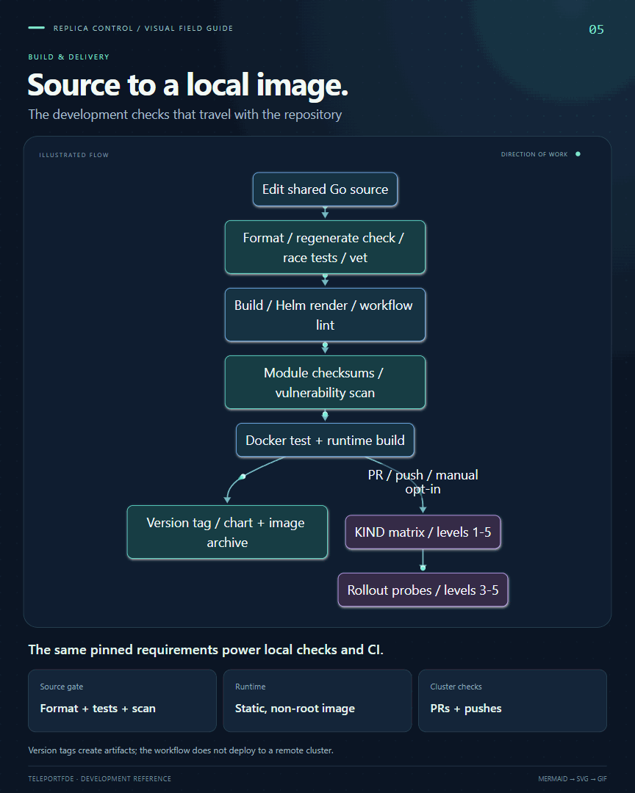

Guide 05 · BUILD & DELIVERY
Source to a local image.
Connect the local toolchain to GitHub checks, container builds, automatic PR and push cluster tests, and version-tag artifacts.


SVG motion · playingIllustration · not live telemetry
{kind=link}
{kind=link}
{kind=link}
{kind=link}
Read the editable Mermaid source
flowchart TB edit[Edit shared Go source] --> quality[Format / regenerate check / race tests / vet] quality --> review[Build / Helm render / workflow lint] review --> security[Module checksums / vulnerability scan] security --> container[Docker test + runtime build] container --> tags[Version tag / chart + image archive] container -->|PR / push / manual opt-in| kind[KIND matrix / levels 1-5] kind --> probe[Rollout probes / levels 3-5] classDef core fill:#182c47,stroke:#76baff,color:#f1f5ff classDef gate fill:#173d44,stroke:#5eead4,color:#f0fdfa classDef optional fill:#352b47,stroke:#c4a6ff,color:#faf5ff class edit,review,container core class quality,security,tags gate class kind,probe optional